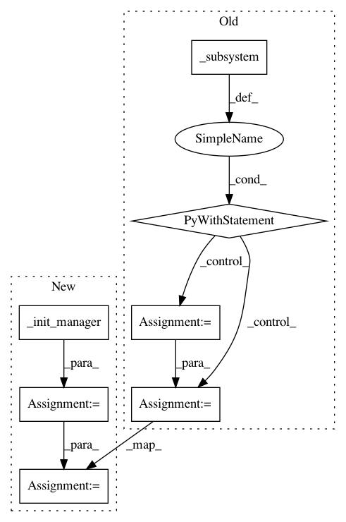

3b77f6b6c38fea6616cae10ca8e0c3a20782934a,tests/python/pants_test/backend/jvm/tasks/test_jar_dependency_management_setup.py,TestJarDependencyManagementSetup,test_no_default_target,#TestJarDependencyManagementSetup#,74
Before Change
JarDependency(org="foobar", name="foobar"),
])
context = self.context(target_roots=[management_target, jar_library])
with self._subsystem() as manager:
task = self.create_task(context)
task.execute()
artifact_set = manager.for_target(jar_library)
self.assertTrue(artifact_set is None)
def test_explicit_target(self):
management_target = self.make_target(spec="//foo:management",
target_type=ManagedJarDependencies,
artifacts=[
After Change
JarDependency(org="foobar", name="foobar"),
])
context = self.context(target_roots=[management_target, jar_library])
manager = self._init_manager()
task = self.create_task(context)
task.execute()
artifact_set = manager.for_target(jar_library)
self.assertTrue(artifact_set is None)
def test_explicit_target(self):
management_target = self.make_target(spec="//foo:management",
In pattern: SUPERPATTERN
Frequency: 3
Non-data size: 7
Instances
Project Name: pantsbuild/pants
Commit Name: 3b77f6b6c38fea6616cae10ca8e0c3a20782934a
Time: 2016-09-12
Author: benjyw@gmail.com
File Name: tests/python/pants_test/backend/jvm/tasks/test_jar_dependency_management_setup.py
Class Name: TestJarDependencyManagementSetup
Method Name: test_no_default_target
Project Name: pantsbuild/pants
Commit Name: 3b77f6b6c38fea6616cae10ca8e0c3a20782934a
Time: 2016-09-12
Author: benjyw@gmail.com
File Name: tests/python/pants_test/backend/jvm/tasks/test_jar_dependency_management_setup.py
Class Name: TestJarDependencyManagementSetup
Method Name: test_using_jar_library_address
Project Name: pantsbuild/pants
Commit Name: 3b77f6b6c38fea6616cae10ca8e0c3a20782934a
Time: 2016-09-12
Author: benjyw@gmail.com
File Name: tests/python/pants_test/backend/jvm/tasks/test_jar_dependency_management_setup.py
Class Name: TestJarDependencyManagementSetup
Method Name: test_explicit_target